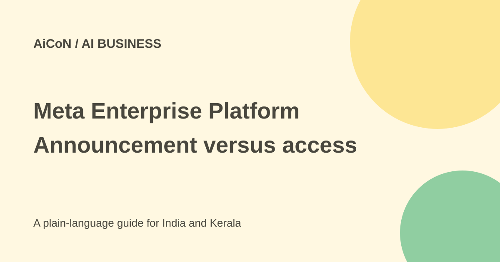

Meta Enterprise Platform: Muse and business-AI launch explained
Meta announced a new enterprise business effort bringing its AI stack to companies. An announcement of a platform direction is not the same as a usable product contract or a free sign-up offer.

What did Meta announce?
The official 28 September 2026 post calls Meta Enterprise Platform a new pillar of the company's business. It says the initial focus is bringing its technology stack to businesses and developers, including the Muse agent, Meta Business Agent, Muse API and Muse Code.
These are the names in the announcement. Do not replace Muse with a different remembered Meta model or assume every named component has the same availability. A company-wide platform direction and a particular product release are separate facts.
Who is leading it?
The post says Chirantan "CJ" Desai will join as Chief Enterprise Platform Officer, reporting to Mark Zuckerberg. It describes his prior roles at MongoDB, Cloudflare and ServiceNow. That leadership announcement explains the business effort; it does not by itself establish support commitments, prices or a delivery date.
Meta says the platform aims to turn its AI stack into products and services companies can deploy. The language sets a direction for future business work. A reader still needs the actual product documentation and commercial offer before making a purchase or integration decision.
Is it free or ready to sign up?
The official announcement checked here does not provide a self-service price, a free-tier allowance or a confirmed public sign-up flow for the full platform. It also does not give a complete timetable for every listed product.
This does not prove that no related Meta service exists. It means the launch article alone is insufficient evidence for platform-wide access. Ask which exact product is available, who can use it, in which countries and under which terms. A similarly named third-party form is not a verified access route.
What might it mean for a business?
The announcement points to agents, models, infrastructure and developer tools as a combined stack. A business may eventually use different pieces for customer work or software development. This guide does not promise that the platform can handle a specific workflow today.
Before replacing an existing service, check integrations, data export, model limits, support and the costs of migration. A large provider's reach does not make your own deployment effortless or eliminate the need for a pilot.
How to evaluate a later offer
- Identify the exact product, not only the platform name.
- Read its current official documentation and availability rules.
- Confirm the price, billing unit, allowance and contract term.
- Review which company data and systems it can access.
- Test a small workflow with approved data.
- Check output quality, permission controls and failure reporting.
- Keep a way to export data and return to the earlier workflow.
Security and privacy claims
The announcement says security and privacy are built into the enterprise products from the outset. That is a company statement, not a full assessment of a specific service. The launch post does not settle training use, retention, data location, audit access or every compliance requirement.
A business should read the actual agreement, privacy terms and technical controls. Do not upload customer records or internal files simply to test an unverified access link. Enterprise branding is not a substitute for approval from the people responsible for those records.
India and Kerala context
The launch can be useful for Indian developers and small businesses tracking future AI tools. It does not provide an India-specific free subscription, subsidy, job application or training course. Check later official product pages for those details instead of assuming a global announcement includes them.
For a small team, waiting for concrete access and terms may be more useful than rebuilding a workflow around an announced direction. Compare a usable offer with your current tools when the decision can be grounded in actual features and cost.
What changed since the original AiCoN post?
This guide adds a product-evaluation checklist and explains why the launch is not enough to infer price, free access or compliance. It keeps the exact stack names and the original caution that concrete access details need separate verification.
Frequently asked questions
Does this announcement give a free account?
No such full-platform offer is documented here.
Are all named products the same service?
No. Check the exact component and its terms.
Does enterprise branding guarantee compliance?
No. Review the actual deployment and agreement.
Sources: Official Meta launch and leadership announcement. Checked 7 October 2026.